Color Spaces, Palettes, and Perception
There is Gold at the End of the Rainbow
Why is the Jet palette so bad?
Name the colors of the rainbow in the correct order...
1. The order is not intuitive to everyone.
2. Categorization is intuitive but unwanted and not consistent.
A Jet-like palette in action
3. The lightness is not linear.
Color Spaces
-
Colors are mixable.
-
Any 3 colors can span a color space.
-
What is the most useful coordinate system?
Primary Color Spaces
-
Color Matching Functions (CMF):
spectral colors <-> color space coordinates. -
Color spaces allow only either + or -
-
Any primary colors have partly negative CMF.

-
RGB covers most of the spectrum accurately.
-
'Darker' primaries (RGB) for + spaces,
'Brighter' primaries (CMY) for - spaces. -
RGB is not uniquely defined!

Cylindical Color Spaces

avoid when possible

CIE Chromaticity Diagram


-
$Y \sim$ luminance, $XYZ$ is additive
-
$x=\frac{X}{X+Y+Z}, \; y=\frac{Y}{X+Y+Z}, \;z=1-x-y$.
-
There is no pink in the rainbow!
-
CIE 1931 xyY is (nearly) perceptually uniform.
-
Calibrated for "Standard Observer" (2°, fovea).
-
Standard Daylight: D65 ($T=6504 K$)
 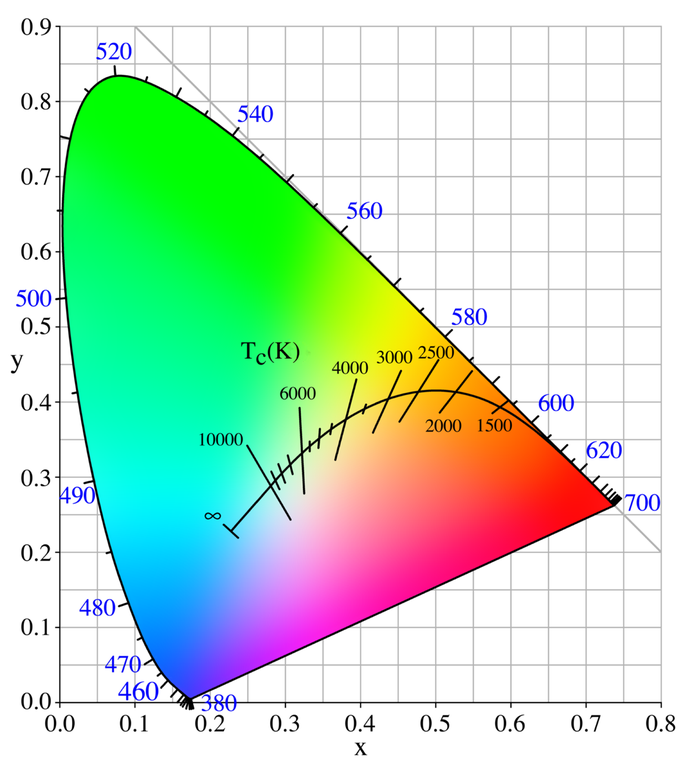
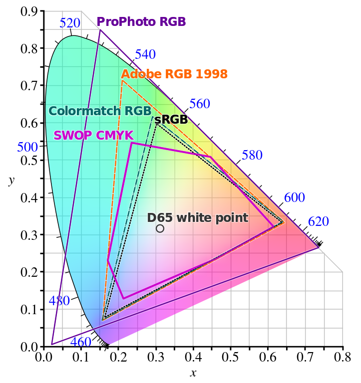
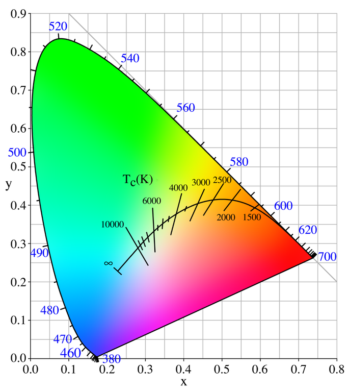
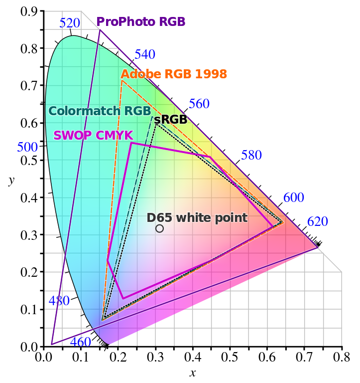
Hue vs. Lightness
Lightness and saturation is more important than hue in guiding attention. But hue helps to indentify and distinguish values.
Adjusting Lightness
For single-hue palettes nonlinear lightness is not problem.
For the multi-hue 'Hot' palette nonlinear lightness is a problem.
Bezier curves in the color space can smoothen lightness.
The lightness can simply be linearized.
Why are there still Categories in the Rainbow?
-
Brightness: how much light a colored area seems to emit.
Lightness: brightness relative to a reference white (~relative luminance)
-
The color spectrum is not perceptually uniform.
-
Words for colors shapes out perception.
For what Type of Data is Jet even intended?
-
Sequential: ordered hues, linear lightness
-
Diverging: ordered hues with center, (bi)linear lightness
-
Cyclical: cyclical hues, cyclical lightness
-
Qualitative: distinctive but uniform hues, distinct color names, varying lightness
Jet tries to be all, and is none.
A practical Guide to choose good Colors
-
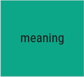 The colors need to fit the data, and be accessible.
-
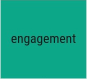 The colors need to fit the application.
-
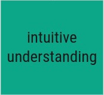 The colors should guide the attention and interpretation.
-
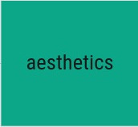 The end product should be pleasant to look at.
1. Meaning - The Colors need to fit the Data, and be Accessible
Data ~ Colors
-
Data Type ~ Palette Type
-
Context ~ Number of Hues
-
Data Values ~ Lightness Values
-
Value Types ~ Continous/Categorical
-
Missing Data Points ~ Extra Color
-
Value Distinctions ~ Color Name Distinctions
Accessibility
-
Color deficiencies (8% in men, 0.5% in women)
-
RGB screens
-
CMYK prints, black/white prints
-
Low contrast beamer
2. Engagement - The Colors need to fit the Application
Color perception is strongly influenced by context.
 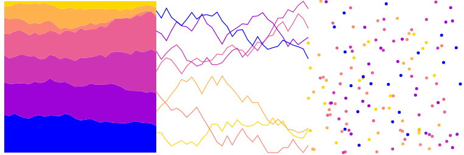
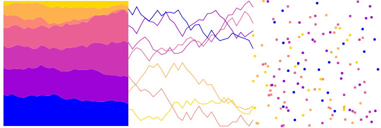
Look out for influences by
-
background color (dark-is-more, opaque-is-more)
-
amount of 'ink' (alpha, linewidth, bar height, ...)
-
neighbouring and overlapping colors within figure
-
existing color schemes in related figures
Pysiological Basis: The Opponent Process
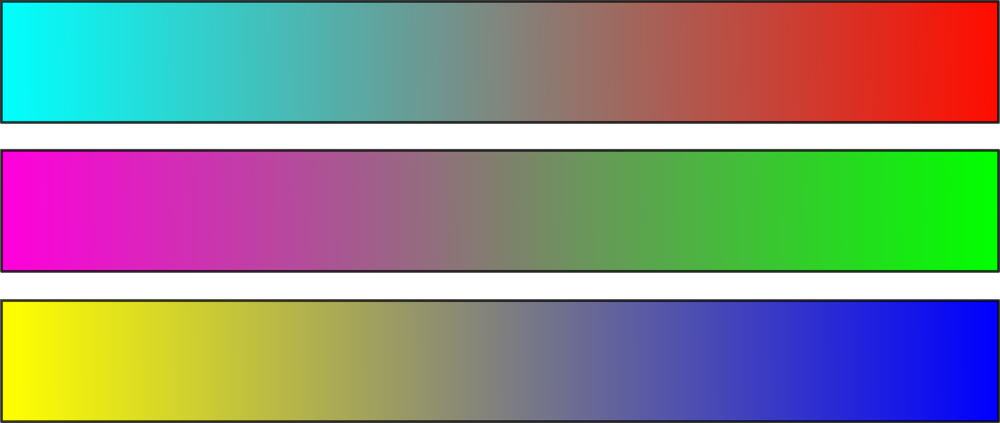 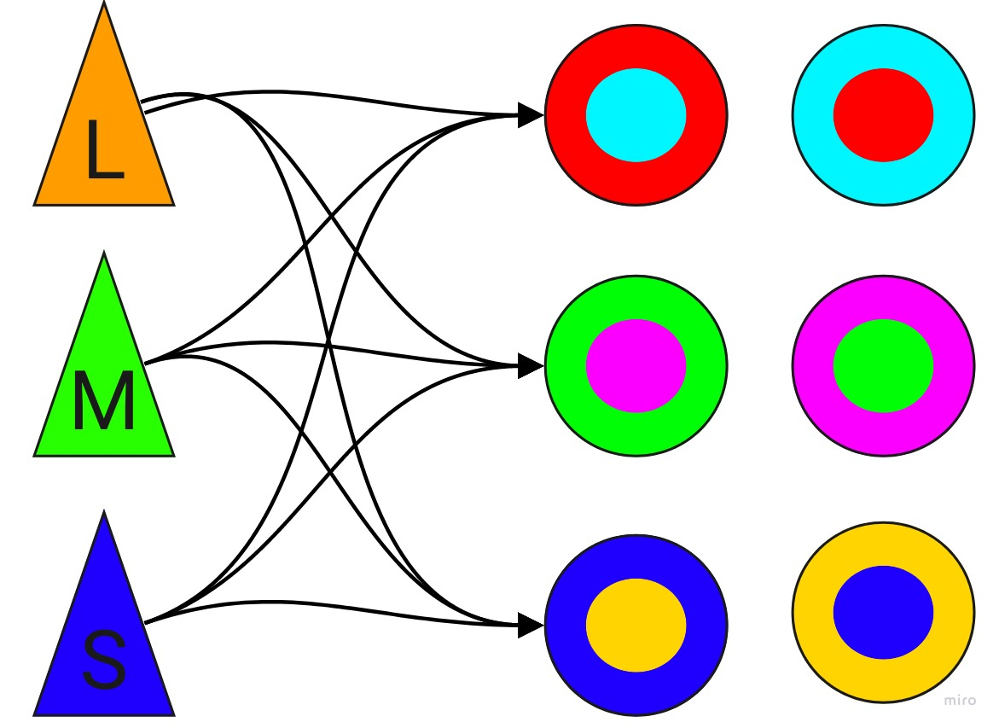
3. Intuitive Understanding - The Colors should Guide the Attention and Interpretation.
Colors themselves have meaning.
-
Colors can evoke emotions.
-
Colors are associated to concepts.
-
-> highlight, discriminate, guide visual flow
-
depend on context and cultural background
-
Beware of conventions in the field.
one Color - many Concepts
many Colors - one Concept
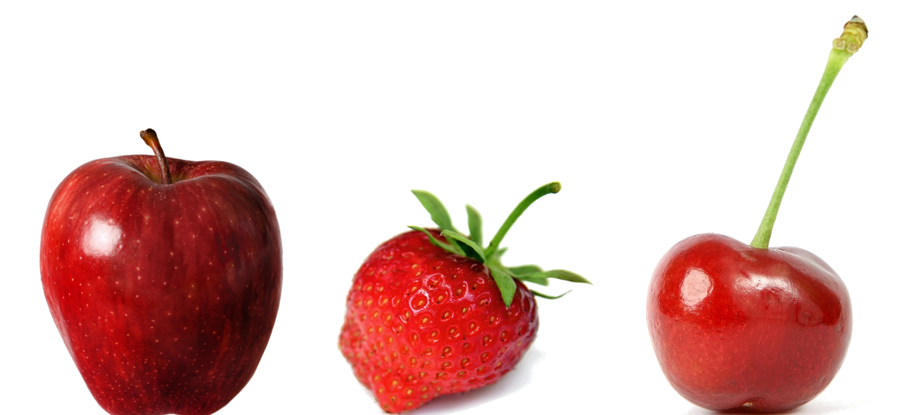 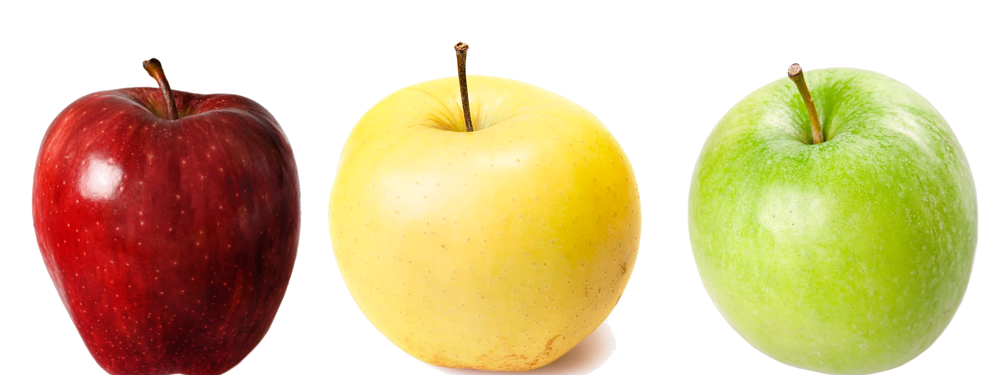 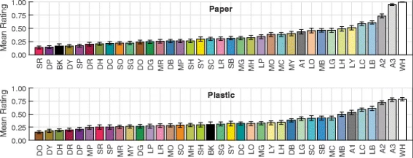Nature, doi: 10.1038/s41593-018-0226-x
4. Aestetics - The End Product should be Pleasant to Look at.
Aestetics are directly related to Understanding and Engagement.
-
Aesthetics vs. Discrimination
-
Color Harmony?
-
Color preferences
~ preferences of associatiated concepts -
Taste is subjective.


{kind=link}
{kind=link}
{kind=link}
{kind=link}
{kind=link}
{kind=link}
{kind=link}
{kind=link}
{kind=link}
{kind=link}
{kind=link}
{kind=link}
{kind=link}
{kind=link}
-
Less is more.
Use colors sparingly. Use subtle colors. -
Use color combinations from nature.
-
Copy from your favorite artists.
References & Further Reading
- Isaac Newton (1704) "Opticks"
- Johann Wolfgang von Goethe (1810) "Zur Farbenlehre"
- Williamson, S J & Cummins, H Z, (1983) "Light and Color in Nature and Art"
- Mazviita Chirimuuta (2015) "Outside Color: Perceptual Science and the Puzzle of Color in Philosophy"
- Jennifer D. T. Kruschwitz (2018) "Field Guide to Colorimetry and Fundamental Color Modeling"
- Charles Poynton (2012) "Digital Video and HD : Algorithms and Interfaces."
- Youtube lecture on color by Craig Blackwell
- Robert Kosara "How The Rainbow Color Map Misleads"
- Robert Kosara "You Only See Colors You Can Name"
- Anton Mikhailov "Turbo, An Improved Rainbow Colormap for Visualization"
- Joshua Stevens, Twitter Thread on Turbo as Improvement on Jet"
- Gregor Aisch "Mastering Multi-hued Color Scales with Chroma.js"
- Gregor Aisch "How To Avoid Equidistant HSV Colors"
- Samantha Zhang "Finding the Right Color Palettes for Data Visualizations"
- Robert Simmon "Subtleties of Color"
- Matteo Niccoli "The Rainbow is Dead... Long live the Rainbow!"
- Nicholas Rougeux "Werner's Nomenclature of Colours by P. Syme"
- Paul Tol "Colour schemes and templates"
- Yasmina Jraissati (2014) "On Color Categorization: Why Do We Name Seven Colors in the Rainbow?" doi: 10.1111/phc3.12131
- Nilgün Camgöz, Cengiz Yener, Dilek Güvenç (2003) "Effects of hue, saturation, and brightness: Part 2: Attention" doi: 10.1002/col.10214
- Cynthia A. Brewer (2013) "A Transition in Improving Maps: The ColorBrewer Example" doi: 10.1559/152304003100011126
- David Borland, Russell M. Taylor (2007) "Rainbow Color Map (Still) Considered Harmful" doi: 10.1109/MCG.2007.323435
- Claus O. Wilke "Fundamentals of Data Visualization" GitBook
- Regan et al. (2001) "Fruits, foliage and the evolution of primate colour vision" doi: 10.1098/rstb.2000.0773
- Changizi et al. (2006) "Bare skin, blood and the evolution of primate colour vision" doi: 10.1098%2Frsbl.2006.0440
- Winawer et al. (2007) "Russian blues reveal effects of language on color discrimination" doi: 10.1073/pnas.0701644104
- Goldstein et al. (2009) "Knowing color terms enhances recognition: Further evidence from English and Himba" doi: 10.1016/j.jecp.2008.06.002
- Karen B. Schloss et al. (2019) "Mapping Color to Meaning in Colormap Data Visualizations" doi: 10.1109/TVCG.2018.2865147
- Karen B. Schloss et al. (2018) "Color inference in visual communication: The meaning of colors in recycling" doi: 10.1186/s41235-018-0090-y
- Karen B. Schloss et al. (2018) "Modeling color preference using color space metrics" doi: 10.1016/j.visres.2017.07.001
- Ralph W. Pridmore (2013) "Single cell spectrally opposed responses: opponent colours or complementary colours?" doi: 10.1007/s12596-012-0090-0
- Vincent A. Billock et al. (2001) "Perception of forbidden colors in retinally stabilized equiluminant images: an indication of softwired cortical color opponency?" doi: 10.1364/JOSAA.18.002398
- Hanne H. Thoen et al. (2014) "A Different Form of Color Vision in Mantis Shrimp" doi: 10.1126/science.1245824
- Dasgupta A. et al. (2018) "The Effect of Color Scales on Climate Scientists’ Objective and Subjective Performance in Spatial Data Analysis Tasks" doi: 10.1126/science.1245824
- DataStories Podcast. Episode 119 with Karen Schloss on Color
- Storytelling With Data Podcast